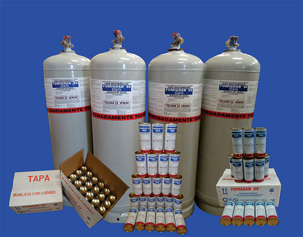

¿Contra quién protegemos nuestros alimentos?
Hoy en día el ritmo de la reproducción de plagas rebasa sustancialmente el ritmo de producción de alimentos, el 30% de los alimentos producidos por la agricultura son perdidos por la alimentación de las plagas.
¿Cómo nos protegemos?
Fumigando con Bromuro de Metilo y Fósfuro de Aluminio
BROMURO DE METILO
El Bromuro de Metilo es un excelente fumigante de suelos y extensamente utilizado para la fumigación de productos almacenados y tratamientos cuarentenarios. FUMIGRAN® es un fumigante de espacios de amplio espectro. Mata eficientemente toda clase de insectos en cada una de sus estadios vitales (huevos, larva, pulpa y adultos). También elimina roedores y parásitos. Cuándo usado adecuadamente, no tiene efectos dañinos en alimentos y otros productos. No tiene efectos residuales.
El Bromuro de Metilo (CH-3Br), es un gas a temperatura y presión normal. Líquido bajo presión. Penetra rápidamente en áreas de almacenamiento y en los artículos o productos almacenados. El producto desaparece rápidamente de manera que la fumigación y los procesos de aireación pueden ser efectuados en no más de 72 horas. El producto no es inflamable y no ofrece ningún peligro de fuego o explosión, es un gas altamente tóxico y consecuentemente es potencialmente peligroso para animales y personas.
FOSFURO DE ALUMINIO
El Fosfuro de Aluminio es un eficiente fumigante cuyo ingrediente activo es el Fosfuro de Aluminio al 57%, adicionado con Carbamato de Amonio, Urea, Parafina y otros elementos que sirven como vehículo y para su compactación en tabletas o pellets comprimidos para su fácil manejo.
Cuando las tabletas o comprimidos de Fosfuro de Alumino se exponen a las condiciones atmosféricas o a la humedad de los productos a fumigar, libera gradualmente el gas de fosfina o fosfuro de hidrógeno, un gas altamente tóxico que elimina la gran mayoría de los insectos.
La efectividad de la fumigación a base de AGRO-FUM® y/o FUMIPHOS® se deriva de su eficacia para liberar el gas fosfina y en las cantidades debidamente dosificadas según las necesidades de fumigación. No deja efectos residuales.
¡Consulte las guías o manuales de fumigación que CAISA tiene a su disposición!
PRESENTACIONES
FUMIGRAN® (Bromuro de Metilo)
90.72kgs. (200lbs.) de producto al 98% y un 2% de cloropicrina como agente delatador en un cilindro metálico con válvula de salida, presurizado a 175 psi. O bien, 680grs. de producto (1.5lbs.) también a 98% y 2% de cloropicrina contenido en una lata metálica sellada, 24 de estas en una caja de cartón doble corrugado para su seguridad.
Se cuenta también con el producto al 100%, es decir sin cloropicrina en los mismos cilindros de 90.72kgs. (200lbs.)
AGRO-FUM® Y FUMIPHOS® (Fosfuro de Aluminio)
Se cuenta con pastillas redondas o planas de 3grs. cada una y liberación de 1.0gr. de fosfina. También contamos con perdigones de 0.6grs. cada uno con liberacion de 0.2grs. de fosfina, estos embalados en 5 diferentes presentaciones: